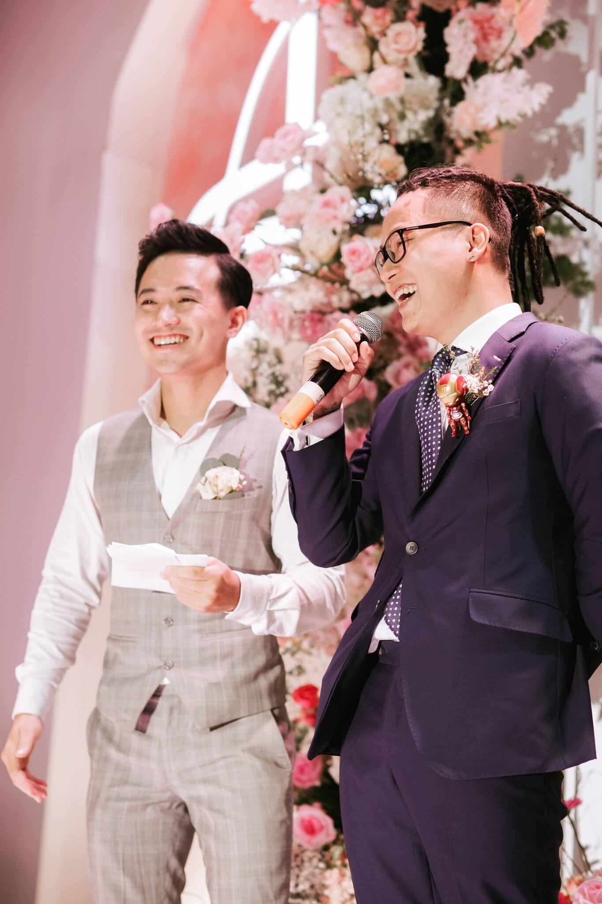

Hosting
Wedding of love, national television shows and talk shows. I host for precious moments and stories. Wedding hosting since 2016, more than 100 shows hosting for VTV and 100 talkshows.

Welcome to my world. Lady Gaga made it clear “I was born this way baby” - Yes! Standing on various forms of stages from the Opera House, Musical Stage, a small gig of music to a beautiful wedding has been my obsession in the past 10 years. Witnessing love and celebrating happiness is my ultimate goal. Every show I do, I put into a little sense of humor, much of my carefulness, chillness, professionalism and of course - love. In my free time, I do acting on various forms of art and also put my love into making my own music.
Professional Artist
Wedding of love, national television shows and talk shows. I host for precious moments and stories. Wedding hosting since 2016, more than 100 shows hosting for VTV and 100 talkshows.
Love, Possitivity and my own songs. I have my first time singing for audience since 2010. Vietnam Idol, Color Me Run with the size of 10,000 runners, Singing in the Opera House. My own show in winter 2019 with 350 audiences.
Original musical, short movies and music videos. I am looking for my next role of life. I am proud of being the leading roles in “Góc Phố Danh Vọng” muisca project by director Nguyễn Phi Phi Anh and being anh Gió in “Xứ sở cầu vồng” on VTV7.